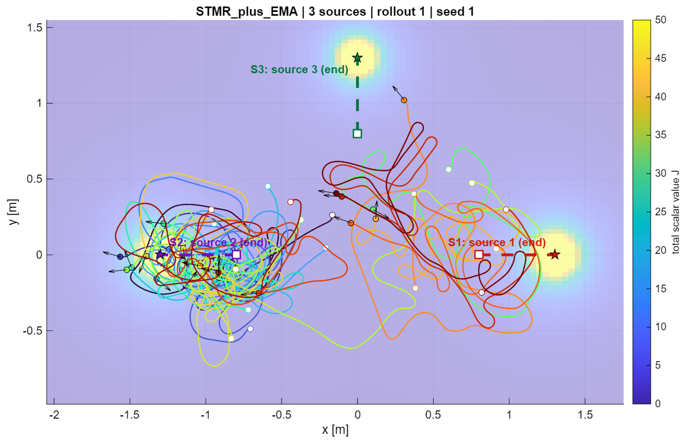

2026–PRESENT
Autonomous systems & swarm robotics
Research Assistant, BSRM School of Engineering, BRAC University. Supervisor: Md Arif Billah, Ph.D.
State-space modeling, feedback control, MATLAB simulation, 3D robot design, a five-agent edge-hardware swarm platform, reinforcement learning and world models for adaptive control.